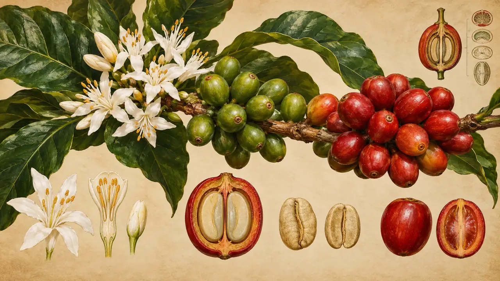

Botanique et diversité
Le café est une graine de la famille des Rubiacées. Deux espèces font l’essentiel du commerce : Arabica et Canephora (robusta). La diversité sauvage est, elle, fragile.
L’essentiel en trois points
- Le genre Coffea compte au moins 124 espèces connues [1] ; 60 % des espèces sauvages sont menacées d’extinction [2].
- L’Arabica est un hybride allotétraploïde entre C. canephora et C. eugenioides, avec 44 chromosomes [3] [4].
- L’Arabica est la source d’environ 60 % des produits à base de café dans le monde [4].
Approfondir
Touchez un titre pour ouvrir ou fermer la rubrique.
Arabica : un hybride récent
Canephora (robusta) et Arabica : différences de plante
Selon la FAO, l’Arabica est autogame (il peut s’autopolliniser), alors que le robusta est allogame ; les feuilles du robusta sont beaucoup plus grandes [5].
Un genre riche, des espèces menacées
Le genre Coffea comprend au moins 124 espèces réparties en Afrique, à Madagascar et dans la zone Asie-Pacifique [1]. L’évaluation de la Liste rouge de l’UICN, menée par Kew sur ces 124 espèces, conclut que 60 % sont menacées d’extinction [2] [6]. Les espèces sauvages comptent pour améliorer les variétés cultivées [6].
Variétés et résistance
Une étude coordonnée par World Coffee Research a comparé en 2025 la réponse de 29 variétés d’Arabica à la rouille dans 15 pays et sur 23 sites [7]. Selon cette étude, les variétés répondent différemment à la maladie selon les conditions ; le choix d’une variété est donc à apprécier localement (lecture du site, pas une conclusion de l’étude).
Rouille et scolyte
Image : illustration générée pour le site, à valeur éditoriale, pas un document photographique.
Termes du dictionnaire
Références
Les affirmations renvoient aux références numérotées ci-dessous, avec leur date de consultation. Les rubriques marquées « à documenter » n’ont pas encore de source vérifiée et n’affirment rien. Certaines sources sont secondaires : leur nature est indiquée dans leur intitulé.
- USDA ARS, Coffee Crop Germplasm Vulnerability Statement (2020) · consulté le 20 novembre 2026
- Royal Botanic Gardens, Kew (2019), 60 % des espèces sauvages de café menacées · consulté le 20 novembre 2026
- Lashermes et al., « Molecular characterisation and origin of the Coffea arabica L. genome » (1999) · consulté le 20 novembre 2026
- Nature Genetics (2024), « The genome and population genomics of allopolyploid Coffea arabica » · consulté le 20 novembre 2026
- FAO, Coffee: introduction et écologie (X6939E) · consulté le 20 novembre 2026
- Science Advances (2019), « High extinction risk for wild coffee species » · consulté le 20 novembre 2026
- World Coffee Research (2025), étude multi-pays sur 29 variétés d’Arabica face à la rouille · consulté le 20 novembre 2026
- World Coffee Research, Prevention and Control of Coffee Leaf Rust · consulté le 20 novembre 2026
- Revue systématique : rouille et scolyte en agroforesterie (Smart Agricultural Technology, 2024) · consulté le 20 novembre 2026
- Royal Society of Chemistry, « Introduction to Coffee Plant and Genetics » (Coffee: Production, Quality and Chemistry) · consulté le 20 novembre 2026
- Coffearium, anatomie de la cerise de café (synthèse secondaire) · consulté le 20 novembre 2026
- ECHO, « A Primer on Coffee Harvesting and Processing » · consulté le 20 novembre 2026